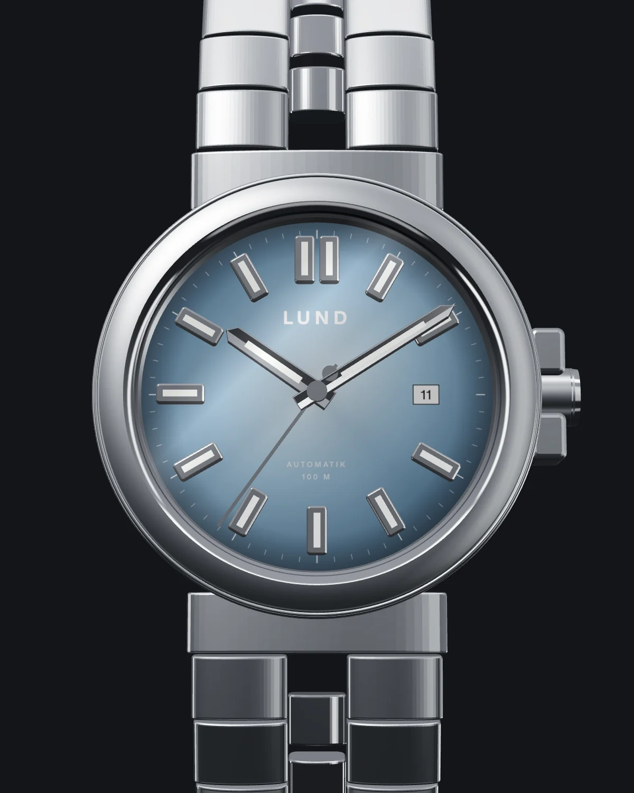
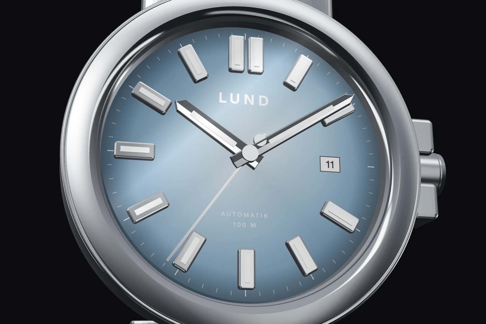
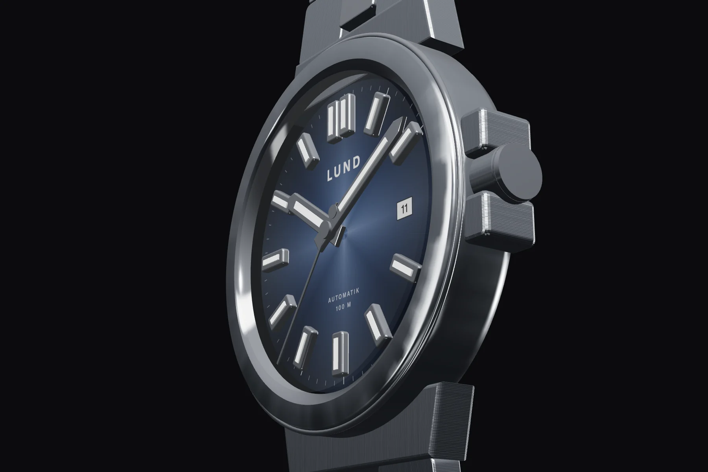
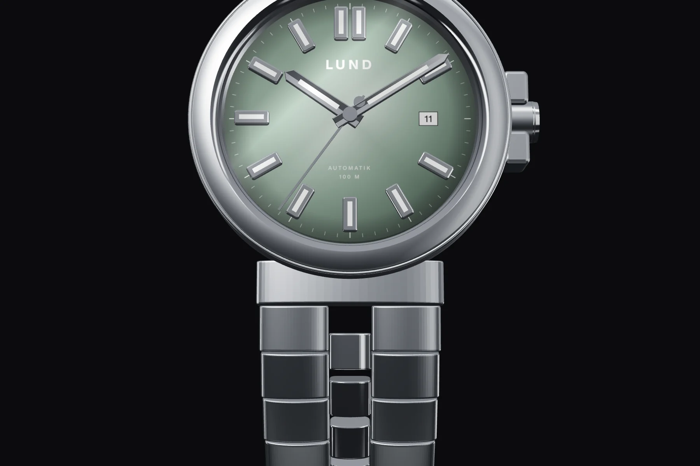
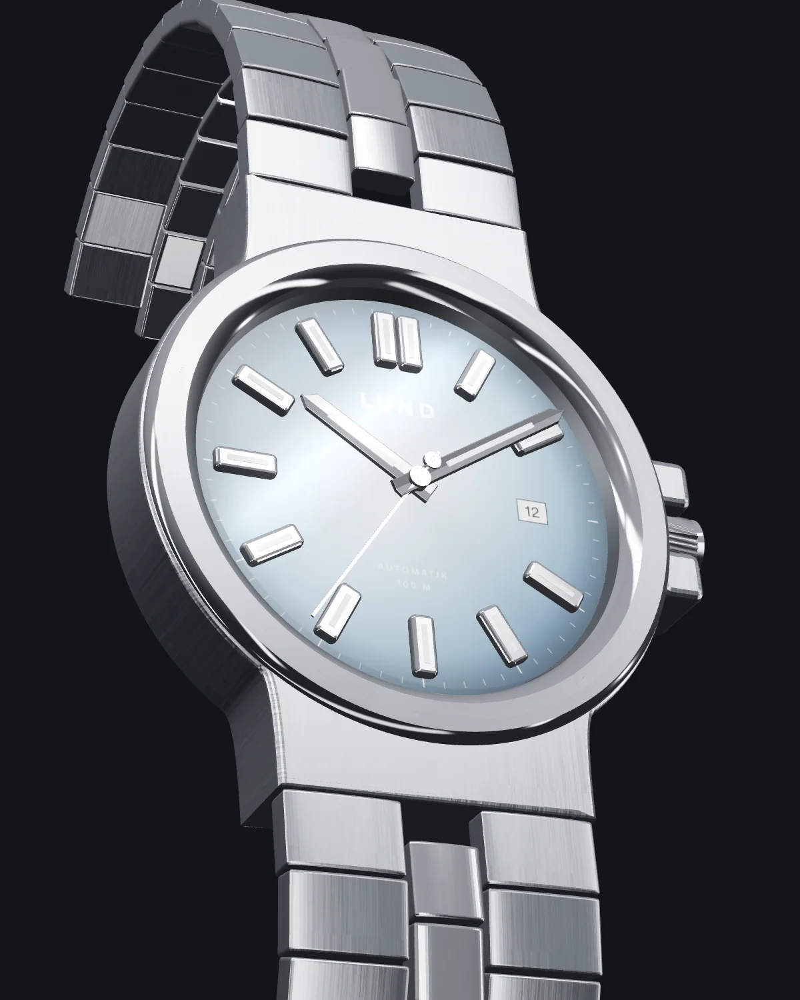

Sonnenschliff, der mit dem Licht spielt.
Jede Farbe verläuft von hell zur Mitte nach dunkel zum Rand. Facettierte, polierte Indexe mit Leuchtmasse bleiben auch nachts lesbar.

LUND Automatik · 36 & 39 mm
10:09 Ortszeit
Eine Uhr für jeden Tag, gebaut wie ein Werkzeug und gestaltet wie ein Schmuckstück. Gehäuse und Armband aus einem Guss, das Zifferblatt in der Farbe, die zu Ihnen passt.



Jede Farbe verläuft von hell zur Mitte nach dunkel zum Rand. Facettierte, polierte Indexe mit Leuchtmasse bleiben auch nachts lesbar.
Flache Lünette mit satinierter Oberfläche, polierte Fasen an den Kanten und eine verschraubte Krone mit Kronenschutz.
Das integrierte Gliederarmband geht nahtlos in das Gehäuse über. Polierte Mittelglieder setzen feine Lichtakzente am Handgelenk.

Ziehen zum Drehen
Farbstudio
Ziehen Sie die Uhr, um sie von allen Seiten zu betrachten. Jede Farbe gibt es in beiden Größen.
Jede Farbe entsteht in limitierter Auflage und wird von Hand montiert und reguliert.
Robustes Schweizer Werk, Saphirglas und verschraubte Krone – gedacht zum täglichen Tragen.
Revision, Politur und Armbandanpassung übernehmen wir in unserer eigenen Werkstatt.
Als Faustregel: Bis etwa 16,5 cm Handgelenksumfang wirkt die 36-mm-Version ausgewogen, darüber die 39-mm-Version. Durch das integrierte Armband trägt die Uhr etwas größer als ihr Durchmesser.
Ja. Jedes Armband hat herausnehmbare Glieder und lässt sich in wenigen Minuten auf Ihren Handgelenksumfang einstellen.
Beim täglichen Tragen zieht sich das Werk durch Ihre Armbewegung selbst auf. Lag die Uhr länger, genügen etwa 30 Umdrehungen an der Krone.
In unserem Atelier, nach kurzer Terminabsprache. Dort können Sie alle sechs Farben in beiden Größen am Handgelenk ausprobieren.
Mit einem weichen Mikrofasertuch. Nach dem Baden im Meer kurz mit Süßwasser abspülen. Wir empfehlen eine Revision des Werks etwa alle fünf Jahre.
Atelier
Besuchen Sie uns und probieren Sie alle sechs Zifferblätter in Ruhe aus. Wir freuen uns auf Ihre Nachricht.
Termin anfragen